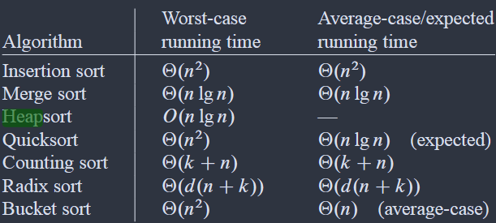

Vorwort
Dieser Kurs behandelt grundlegende Konzepte der Algorithmik und Datenstrukturen, wie sie im Bachelorstudium Informatik an der FSU Jena gelehrt werden. Die Inhalte orientieren sich am Standardwerk Cormen et al. – Introduction to Algorithms (CLRS).
Themenübersicht
- Laufzeitanalyse – Asymptotische Notation, O-Kalkül, Komplexitätsklassen
- Algorithmen – Heapsort als Beispiel für effiziente, heapbasierte Sortierverfahren
- Datenstrukturen – MaxHeap und MinHeap als Array-basierte Baumstrukturen
Aufbau der Kapitel
Jedes Kapitel enthält eine Erklärung als Fließtext, Komplexitätstabellen und einen
Code-Viewer mit Implementierungen in Pseudocode, Java, Python und Prolog.
Neue Kapitel lassen sich einfach durch ein weiteres
<section class="chapter"> im HTML ergänzen.
Den Code-Viewer findest du am Ende jedes Kapitels. Über das Dropdown im Header des Viewers kannst du zwischen Pseudocode und den jeweiligen Programmiersprachen wechseln.
Code-Beispiel
Laufzeitanalyse
Die Laufzeitanalyse bewertet, wie sich die Ausführungszeit eines Algorithmus in Abhängigkeit von der Eingabegröße n verhält. Dabei interessiert uns vor allem das asymptotische Verhalten – also das Wachstum für große n.
O-Notation (Groß-O)
Die O-Notation beschreibt eine obere Schranke der Laufzeit.
T(n) = O(f(n)) bedeutet: T(n) wächst höchstens so schnell wie
f(n), ab einem bestimmten Schwellwert n₀.
Häufige Komplexitätsklassen
| Notation | Bezeichnung | Typische Beispiele |
|---|---|---|
| O(1) | Konstant | Array-Zugriff, Heap-Maximum lesen |
| O(log n) | Logarithmisch | Binäre Suche, Heap-Einfügen |
| O(n) | Linear | Lineare Suche, BuildHeap |
| O(n log n) | Log-linear | Heapsort, Mergesort |
| O(n²) | Quadratisch | Bubblesort, Insertionsort |
| O(2ⁿ) | Exponentiell | Naive Teilmengenproblem |
Weitere Notationen
- Ω-Notation – untere Schranke: der Algorithmus braucht mindestens so viel Zeit
- Θ-Notation – enge Schranke: obere und untere Schranke stimmen überein
- o-Notation – echte obere Schranke: strikt kleiner, nicht gleich
Konstante Faktoren und kleinere Terme werden bei der asymptotischen Analyse ignoriert.
T(n) = 3n² + 5n + 7 ist daher einfach O(n²).
Pseudocode-Beispiele
Algorithmen
Ein Algorithmus ist eine endliche, präzise Folge von Anweisungen, die ein gegebenes Problem für alle zulässigen Eingaben korrekt löst und terminiert.
Wichtige Eigenschaften
- Korrektheit – Das Ergebnis ist für alle Eingaben richtig.
- Terminierung – Der Algorithmus hält nach endlich vielen Schritten an.
- Effizienz – Zeit- und Speicherkomplexität sind vertretbar.
- Determiniertheit – Gleiche Eingabe liefert immer gleiche Ausgabe.
Klassifikation von Sortieralgorithmen
| Algorithmus | Worst Case | Stabil? | In-Place? |
|---|---|---|---|
| Heapsort | O(n log n) | Nein | Ja |
| Mergesort | O(n log n) | Ja | Nein |
| Quicksort | O(n²) | Nein | Ja |
| Insertionsort | O(n²) | Ja | Ja |
In diesem Kurs
Als konkretes Beispiel eines effizienten Sortierverfahrens wird Heapsort behandelt. Er garantiert O(n log n) in allen Fällen und benötigt keinen zusätzlichen Speicher (in-place).
Heapsort
Heapsort ist ein vergleichsbasierter Sortieralgorithmus, der auf der Datenstruktur MaxHeap aufbaut. Er kombiniert die Vorteile von Insertionsort (in-place) mit denen von Mergesort (O(n log n) garantiert).
Ablauf in zwei Phasen
- Phase 1 – BuildMaxHeap: Das gesamte Array wird in einen gültigen MaxHeap umgewandelt. Das größte Element steht danach an Stelle A[0]. Laufzeit: O(n).
- Phase 2 – Sortierschleife: Das Maximum A[0] wird mit dem letzten unsortierten Element getauscht und ans Ende „gelegt". Die Heapgröße wird um 1 verringert und MaxHeapify stellt die Heap-Eigenschaft wieder her. Dieser Schritt wiederholt sich n−1 mal. Laufzeit: O(n log n).
Komplexität
| Fall | Laufzeit | Speicher |
|---|---|---|
| Best Case | O(n log n) | O(1) |
| Average Case | O(n log n) | O(1) |
| Worst Case | O(n log n) | O(1) |
Heapsort ist in-place (sortiert ohne zusätzlichen Speicher) und garantiert O(n log n) — unabhängig von der Eingabe. Es ist jedoch nicht stabil, d.h. gleiche Elemente können ihre relative Reihenfolge ändern.
Voraussetzung: MaxHeap
Heapsort setzt die Operationen BuildMaxHeap und MaxHeapify voraus, die im Kapitel MaxHeap (Datenstrukturen) detailliert erklärt werden.
Implementierung
Datenstrukturen
Eine Datenstruktur legt fest, wie Daten im Speicher angeordnet, gespeichert und verwaltet werden. Die Wahl der richtigen Datenstruktur beeinflusst die Laufzeit von Algorithmen erheblich.
Binäre Heaps
Ein binärer Heap ist ein vollständiger binärer Baum, der als flaches Array gespeichert wird. Für einen Knoten an Index i (0-basiert) gilt:
- Linkes Kind: Index
2·i + 1 - Rechtes Kind: Index
2·i + 2 - Elternknoten: Index
⌊(i−1) / 2⌋

Heap-Struktur: Baumdarstellung (oben) und Array-Repräsentation (unten)
Heap-Varianten in diesem Kurs
| Typ | Heap-Eigenschaft | Wurzel enthält |
|---|---|---|
| MaxHeap | A[parent] ≥ A[child] | Maximum |
| MinHeap | A[parent] ≤ A[child] | Minimum |
MaxHeap
Ein MaxHeap ist ein vollständiger binärer Baum (im Array gespeichert), bei dem jeder Elternknoten größer oder gleich seinen Kindern ist. Das Maximum steht immer an Position A[0] und kann in O(1) abgerufen werden.
Operationen und Laufzeiten
| Operation | Laufzeit | Beschreibung |
|---|---|---|
| BuildMaxHeap | O(n) | Array in gültigen MaxHeap umwandeln |
| MaxHeapify | O(log n) | Heap-Eigenschaft ab Index i wiederherstellen |
| MaxHeapInsert | O(log n) | Neuen Schlüssel einfügen |
| ExtractMax | O(log n) | Maximum entfernen und zurückgeben |
| Maximum lesen | O(1) | A[0] zurückgeben |
MaxHeapify – Kernoperation
MaxHeapify(A, i) stellt sicher, dass der Teilbaum ab Index i die MaxHeap-Eigenschaft erfüllt. Dazu wird der Knoten bei Bedarf mit dem größeren seiner Kinder getauscht und rekursiv weiter nach unten korrigiert.
BuildMaxHeap
Durch Aufruf von MaxHeapify auf allen inneren Knoten (von unten nach oben) wird ein beliebiges Array in einen MaxHeap umgewandelt. Obwohl MaxHeapify einzeln O(log n) kostet, ist die Gesamtlaufzeit von BuildMaxHeap nur O(n).
Der MaxHeap wird von Heapsort als Grundstruktur verwendet. Das Verständnis von MaxHeapify und BuildMaxHeap ist daher Voraussetzung für Heapsort.
Implementierung
MinHeap
Ein MinHeap ist das Gegenstück zum MaxHeap: Jeder Elternknoten ist kleiner oder gleich seinen Kindern. Das Minimum steht immer an Position A[0] und kann in O(1) abgerufen werden.
Unterschied zum MaxHeap
Struktur und Operationen sind identisch zum MaxHeap – lediglich die Vergleichsrichtung ist umgekehrt:
- MaxHeap:
A[parent] ≥ A[child]→ Wurzel = Maximum - MinHeap:
A[parent] ≤ A[child]→ Wurzel = Minimum
Operationen und Laufzeiten
| Operation | Laufzeit | Beschreibung |
|---|---|---|
| BuildMinHeap | O(n) | Array in gültigen MinHeap umwandeln |
| MinHeapify | O(log n) | Heap-Eigenschaft ab Index i wiederherstellen |
| MinHeapInsert | O(log n) | Neuen Schlüssel einfügen |
| ExtractMin | O(log n) | Minimum entfernen und zurückgeben |
| Minimum lesen | O(1) | A[0] zurückgeben |
Typische Anwendungsfälle
- Prioritätswarteschlangen – z.B. im Dijkstra-Algorithmus für kürzeste Wege
- Scheduling – immer den Prozess mit kleinster Priorität zuerst
- K-smallest – Effizientes Abrufen der k kleinsten Elemente aus einer Menge
MinHeapInsert beginnt mit dem Wert +∞ an der neuen Position und ruft dann MinHeapDecreaseKey auf, um den tatsächlichen Schlüssel einzusetzen und nach oben zu "sickern" (bubble-up).
Implementierung
PriorityQueue
Eine Prioritätswarteschlange (Priority Queue) ist ein abstrakter Datentyp, bei dem jedes Element eine numerische Priorität trägt. Im Gegensatz zur gewöhnlichen FIFO-Warteschlange wird stets das Element mit der höchsten (Max-PQ) oder niedrigsten (Min-PQ) Priorität als nächstes entnommen – unabhängig von der Einfügereihenfolge.
Heap als natürliche Implementierung
Der binäre Heap ist die kanonische Implementierung einer Prioritätswarteschlange: Insert läuft in O(log n), ExtractMax/Min entnimmt die Wurzel in O(log n), und das Maximum bzw. Minimum ist in O(1) lesbar. Eine sortierte Liste oder ein unsortiertes Array wären für mindestens eine der beiden Operationen langsamer.
Komplexität im Vergleich
| Implementierung | Insert | ExtractMax/Min | Peek |
|---|---|---|---|
| Binärer Heap | O(log n) | O(log n) | O(1) |
| Sortiertes Array | O(n) | O(1) | O(1) |
| Unsortiertes Array | O(1) | O(n) | O(n) |
Variante 1 – Manuell: TaskMaxHeap
TaskMaxHeap ist eine händisch implementierte MaxHeap-basierte
Prioritätswarteschlange für TaskManual-Objekte. Das Element mit der
höchsten Priorität steht stets an der Wurzel (Index 0) und
wird von extractMax() als erstes entnommen. Nach jedem Insert
stellt ein Bubble-up, nach jeder Entnahme ein Heapify-down die
Heap-Eigenschaft wieder her. Diese Variante macht den Mechanismus explizit sichtbar
und zeigt, was hinter jeder fertigen Bibliotheksklasse steckt.
Variante 2 – Java-Standard: java.util.PriorityQueue
Javas eingebaute PriorityQueue<E> ist intern als
binärer MinHeap implementiert – standardmäßig wird also das
Element mit der niedrigsten Priorität zuerst entnommen (natürliche Ordnung
via Comparable). Um eine Max-PQ zu erhalten, muss ein umgekehrter
Comparator übergeben werden:
new PriorityQueue<>(Comparator.comparingInt((Task t) -> t.priority).reversed())
TaskManager zeigt diese Variante: Nach außen verhält sie sich identisch
zur manuellen Implementierung, nutzt intern jedoch die Laufzeitbibliothek.
In der Praxis ist dies der bevorzugte Weg.
Faustregel: In realen Projekten wird fast immer
java.util.PriorityQueue eingesetzt. Die manuelle Implementierung
dient dem Verständnis der Heap-Mechanik und verdeutlicht, was intern abläuft.
Exkurs: Stack und Heap im Betriebssystem
Die Begriffe Stack und Heap bezeichnen im Kontext des Betriebssystems zwei unterschiedliche Arbeitsspeicherbereiche – nicht zu verwechseln mit den gleichnamigen Datenstrukturen.
Der Call Stack ist ein fester, bei Programmstart dimensionierter Speicherbereich, der Funktionsaufrufe, Rücksprungadressen und lokale Variablen verwaltet. Er arbeitet strikt nach dem LIFO-Prinzip: Beim Aufruf einer Funktion wird ein neuer Stack Frame aufgelegt, beim Rücksprung wieder entfernt. Diese Struktur ist sehr schnell – Allokation ist ein einzelner Zeigerarithmetik-Schritt – jedoch starr: Die maximale Tiefe ist begrenzt, und zu tiefe Rekursion führt zu einem StackOverflowError.
Der Heap-Speicher (dynamischer Speicher) ist der deutlich größere,
flexible Bereich, in dem Objekte zur Laufzeit allokiert werden. In Java landen alle
per new erzeugten Objekte im Heap. Er wächst und schrumpft dynamisch;
ein Garbage Collector gibt nicht mehr erreichbare Objekte frei.
Heap-Allokation ist langsamer als Stack-Allokation, bietet aber nahezu unbegrenzte
Kapazität und ermöglicht, Daten über Funktionsgrenzen hinweg zu halten.
| Eigenschaft | Call Stack | Heap-Speicher |
|---|---|---|
| Größe | Fest (typ. 512 KB – 8 MB) | Dynamisch (GB-Bereich) |
| Allokationsgeschwindigkeit | O(1), sehr schnell | Langsamer (GC-Overhead) |
| Zugriffsmuster | LIFO (Stack Frames) | Beliebig |
| Überlaufrisiko | StackOverflowError | OutOfMemoryError |
| Lebensdauer | An Funktionsaufruf gebunden | Bis GC freigibt |
Terminologischer Hinweis: Der „Heap" als OS-Speicherbereich und der „Heap" als Datenstruktur (MaxHeap, MinHeap) sind konzeptuell unabhängig – die Namensgleichheit ist historisch bedingt und eine häufige Quelle von Verwirrung.
Implementierung – manuell vs. Java-Standard
Asymptotische Notation
Dieser Abschnitt wird noch ausgearbeitet.
Platzhalter – hier kommt die formale Definition der asymptotischen Notationen.
Beispiel
Laufzeitklassen
Dieser Abschnitt wird noch ausgearbeitet.
Platzhalter – hier kommen Wachstumskurven und Beispiele für jede Laufzeitklasse.
Beispiel
Methode 1: Funktionen ineinander überführen
Dieser Abschnitt wird noch ausgearbeitet.
Platzhalter – hier kommt die Methode zum direkten Überführen von Funktionen in Schranken.
Beispiel
Methode 2: Rekursionsbaum
Dieser Abschnitt wird noch ausgearbeitet.
Platzhalter – hier kommt die Rekursionsbaum-Methode mit Schritt-für-Schritt-Beispiel.
Beispiel
Methode 3: Master-Theorem
Dieser Abschnitt wird noch ausgearbeitet.
Platzhalter – hier kommen die drei Fälle des Master-Theorems mit Beispielen.
Beispiel
Bubblesort
Dieser Abschnitt wird noch ausgearbeitet.
Platzhalter – hier kommt die Erklärung von Bubblesort mit Pseudocode und Implementierungen.
Implementierung
Mergesort
Dieser Abschnitt wird noch ausgearbeitet.
Platzhalter – hier kommt die Erklärung von Mergesort mit Pseudocode und Implementierungen.
Implementierung
Quicksort
Dieser Abschnitt wird noch ausgearbeitet.
Platzhalter – hier kommt die Erklärung von Quicksort mit Pseudocode und Implementierungen.
Implementierung
Insertionsort
Dieser Abschnitt wird noch ausgearbeitet.
Platzhalter – hier kommt die Erklärung von Insertionsort mit Pseudocode und Implementierungen.
Implementierung
Selectionsort
Dieser Abschnitt wird noch ausgearbeitet.
Platzhalter – hier kommt die Erklärung von Selectionsort mit Pseudocode und Implementierungen.
Implementierung
Countingsort
Dieser Abschnitt wird noch ausgearbeitet.
Platzhalter – hier kommt die Erklärung von Countingsort mit Pseudocode und Implementierungen.
Implementierung
Radixsort
Dieser Abschnitt wird noch ausgearbeitet.
Platzhalter – hier kommt die Erklärung von Radixsort mit Pseudocode und Implementierungen.
Implementierung
Weitere Sortieralgorithmen
Dieser Abschnitt wird noch ausgearbeitet.
Platzhalter – hier kommen Bucketsort und weitere Sortierverfahren nach Bedarf.
Implementierung